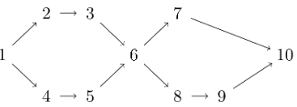
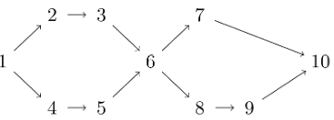
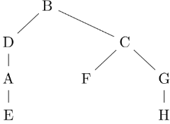
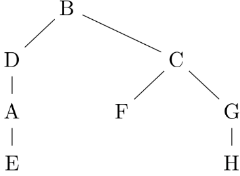

Assignment
Q1
An undirected graph G on 25 vertices has 5 connected components. What is the minimum number of edges in G ?
Answer
b
Q2
Suppose we have a directed graph G = ( V, E ) with V = { 1, 2, …, n } and E is presented as an adjacency list. For each vertex u in V, out( u ) is a list [ v1, v2, …, vk ] such that ( u, vi ) in E for each i in { 1, 2, …, k.
For each u in V, we wish to compute a corresponding list in ( u ) = [ v1, v2, …, vk' ] such that ( vi, u ) in E for each i in { 1, 2, …, k'.
Let n be the number of vertices in V and m be the number of edges in E. How long would it take to construct the lists in( u ), u in V, from the lists out( u ), u in V ?
For each u in V, we wish to compute a corresponding list in ( u ) = [ v1, v2, …, vk' ] such that ( vi, u ) in E for each i in { 1, 2, …, k'.
Let n be the number of vertices in V and m be the number of edges in E. How long would it take to construct the lists in( u ), u in V, from the lists out( u ), u in V ?
Answer
c
Q3
Suppose we obtain the following DFS tree rooted at node B for an undirected graph with vertices { A, B, C, D, E, F, G, H }.

Which of the following cannot be an edge in G?

Which of the following cannot be an edge in G?
Answer
d
Q4
We are interested in topological orderings of the following DAG that satisfy one or both of the following constraints:
3 appears before 5
7 appears before 9
How many such orderings are there?

3 appears before 5
7 appears before 9
How many such orderings are there?

Answer
c
Q5
Assembling a modern car consists of many steps, such as fitting the engine block, connecting the brakes, attaching the doors, etc. Suppose there are 10 steps, labelled A, B, C, D, E, F, G, H, I, J. Each step takes a day to complete and we have the following dependencies between steps.
A must happen before F
A must happen before I
B must happen before G
B must happen before D
C must happen before B
D must happen before E
D must happen before J
E must happen before H
F must happen before C
G must happen before D
I must happen before B
I must happen before G
J must happen before H
What is the minimun number of days required to assemble a car?
A must happen before F
A must happen before I
B must happen before G
B must happen before D
C must happen before B
D must happen before E
D must happen before J
E must happen before H
F must happen before C
G must happen before D
I must happen before B
I must happen before G
J must happen before H
What is the minimun number of days required to assemble a car?
Answer
b